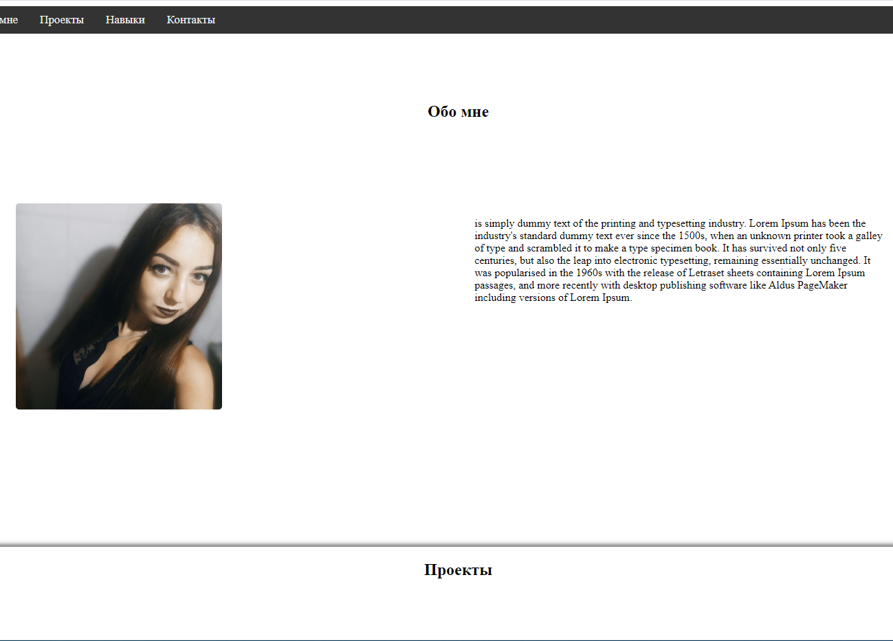

сайт 1

Сообственно, сам сайт обо мне. Один из первых моих проектов. Не смотря на простой вид, он активно использует как CSS3, так и JavaScript. Ну и HTML5 соответственно. Его исходники, если кому интересно, можно найти на моем репозитории GitHub'а, перейдя туда, нажав на кнопку.
сайт 2
Сайт, посвященный сборкам примеров по верстке сайтов. Собраны
различные стили и функции для функционального проекта, часть из которых
применялись при написании данного сайта. Надеюсь, начинающим
разработчикам будет интересно.